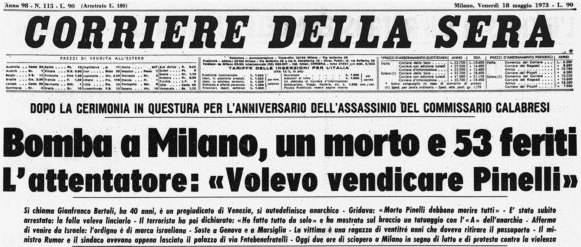

Strage della questura di Milano (17 maggio 1973)

Prima pagina del Corriere della sera del 18 maggio 1973.
Scheda Descrittiva
| Titolo | Prima pagina del Corriere della sera del 18 maggio 1973 |
|---|---|
| Identificatore | image_ByPSGD.png |
| Autore / Ente | Corriere della sera |
| Data | 18 maggio 1973 |
| Luogo | Milano, Strage della questura (Vedi sulla mappa) |
| Soggetto / Tema | Strage della questura di Milano; Anni di Piombo; Indagini giudiziarie |
| Persone Correlate | Gianfranco Bertoli |
Storia
La mattina di giovedì 17 maggio 1973, a Milano, si svolgeva presso la Questura di via Fatebenefratelli la cerimonia commemorativa per il commissario Luigi Calabresi, assassinato esattamente un anno prima, il 17 maggio 1972. Alla cerimonia partecipavano numerose autorità, tra cui il ministro dell'Interno Mariano Rumor, il prefetto e il sindaco di Milano.
La commemorazione prevedeva lo scoprimento di un busto dedicato a Calabresi.
Poco prima delle ore 11:00, la cerimonia era ormai terminata, il ministro Rumor aveva appena lasciato il luogo della commemorazione, allontanandosi dalla Questura e fu proprio in quei minuti che Gianfranco Bertoli, arrivato davanti alla Questura, si avvicinò alla folla ancora presente sul posto.
Secondo la ricostruzione giudiziaria Bertoli lanciò verso l'ingresso della Questura una bomba a mano di tipo ananas. L'ordigno esplose tra le persone che stavano ancora partecipando alla cerimonia.
L'esplosione provocò immediatamente un gran numero di vittime e feriti. Nel giro di pochi istanti morirono quattro persone: Gabriella Bortolon, 23 anni; Felicia Bartolozzi, 60 anni; Federico Masarin, 30 anni, agente di pubblica sicurezza; e Giuseppe Panzino, 63 anni, carabiniere in congedo. I feriti furono 52.
Subito dopo l'esplosione si scatenò il panico. Bertoli fu immediatamente individuato e arrestato dalle forze dell'ordine presenti sul posto, dopo essere stato sottratto al tentativo di aggressione da parte di alcune delle persone presenti. Fu portato all'interno della Questura per essere interrogato. Nel corso del primo interrogatorio dichiarò di chiamarsi Gianfranco Bertoli e sostenne di essere un anarchico individualista, affermando di aver agito autonomamente. In seguito alle indagini emersero però numerosi elementi riguardanti i suoi rapporti con ambienti dell'estrema destra e con apparati dei servizi segreti, aprendo una delle vicende più controverse della storia delle stragi italiane.
L'attentato ebbe inoltre una forte valenza politica: il principale obiettivo apparente sembrava essere Mariano Rumor, che aveva appena lasciato la cerimonia.
Le successive indagini giudiziarie hanno approfondito soprattutto i rapporti di Bertoli con Ordine Nuovo e la possibile esistenza di mandanti e finalità eversive. La ricostruzione delle responsabilità rimase per decenni al centro di controversie giudiziarie e storiche. La strage si inseriva in un clima di fortissima tensione: Milano era ancora profondamente segnata dalla strage di piazza Fontana del 12 dicembre 1969, dalla morte di Giuseppe Pinelli e dall'assassinio di Luigi Calabresi del 17 maggio 1972. Proprio per questo, l'attentato del 17 maggio 1973 assunse un significato particolarmente drammatico nella storia degli anni di piombo.